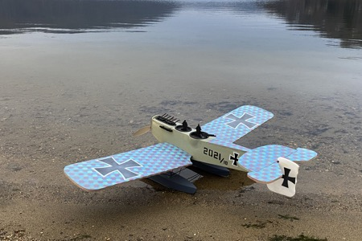
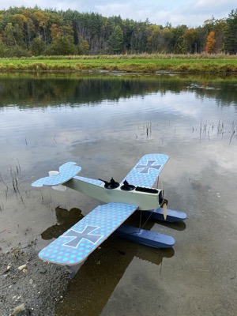
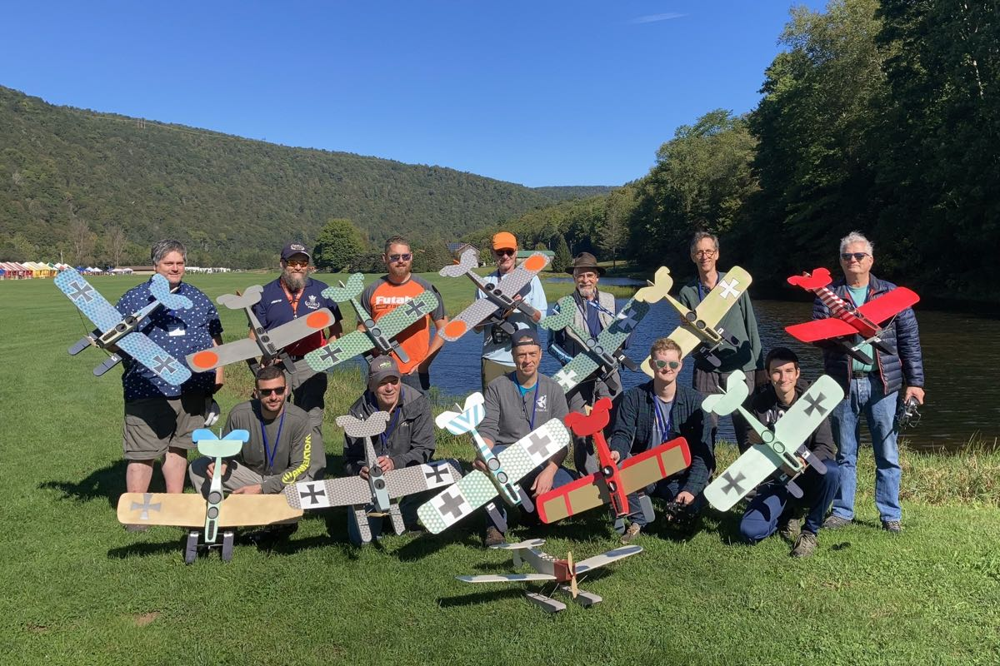

|
I've been looking at the Hansa Brandenburg W.29 as a possible subject for quite a while, and was always put off by the forest of struts, and apparent complexity of doing it as a serious scale model. It's appeal never loosened its grip though. As an unusual WWI subject and a float plane, it ticked off two of my favorite boxes. I never doubted that I would add one to my fleet at some point. When was only a matter of time.
It wasn't until discussing a WWI group build for the 2021 NEAT Fair with Ross Clements that I considered a much simpler model that was merely inspired by the full scale prototype. With all ambition of an actual scale model tossed aside, it was relatively easy to simplify the design and get started. |
 |
|
The primary goal for this project was to have fun with a quick-building pond flyer inspired by the original W.29's cartoony character. The quick-build factor was the key component for the recipe, as the original plan was to build the models on site at the event. With a potential of 12-15 people building together in a tent, "Simplify, Simplify, Simplify" became the order of the day.
Chris Parent got dragged into the mix at about this time, and was invaluable in helping to develop the design and build the first flying prototype. A few obvious compromises were made, such as not trying to round the engine cowl area of the forward fuselage. Similarly, we all agreed on closed cockpits to minimize any water ingress, and make it easy to add pilot figures. Speaking of pilots, even the simple foam silhouettes shown quite effectively dress up the model. They may not look like much in the pits, but they do greatly improve the impression while flying by. Sheet foam construction is hard to beat for speed, light weight, and water resistance, all key factors on the design brief. We decided that 6mm Depron would be ideal for the basic airframe, while solid foam floats would save building time and remove any worries of water ingress. It didn't take long to work up the basic airframe design, and I laser cut a set of parts for a quick proof-of-concept build. The fuselage and flying surfaces looked great, though my initial attempts to manually cut solid foam floats were less successful. A basic "jig saw" hot wire configuration quickly convinced me to look for another path. Pondering the option of using my gravity powered hot wire bow left a lot of questions, and I soon convinced myself that a CNC foam cutter was the best solution. Unfortunately, I didn't have one at my disposal, or so I thought. A good sleep suggested that modifying my Stepcraft CNC machine might provide the solution. I removed the Stepcraft's spindle, and quickly lashed a simple hot wire bow to the Z axis for the first test. Wow!! | |
|  |
The initial sample cuts looked extremely promising, though I could see rippling in a few places where harmonic resonances from the stepper motors had excited the wire. A few quick tests soon gave a set of speed and power parameters that would work, and the results continue to impress. You can see a video of that initial bow cutting one of the prototype floats below. The results were so successful that I have since made a new bow that cuts just shy of the full width of my Stepcraft D.600.
The power system detailed below gives about 50 watts at full power and is a winning combination. Most of my flying with the W.29 is a series of circuits around the pattern, searching for that perfect "pitter-patter" return to the water. Such flying averages just over 2 amps, and I typically change the packs after 12 minutes or so of flying, just to ensure I don't get stranded off shore. I have logged times over 15 minutes, from smaller ponds that allow easy rescue.. No water nearby? No problem! We have flown the W.29 prototypes from grass without trouble. It also does well from snow, easily taking off in less than 5 feet, as confirmed by the tracks. |
|---|---|
| The W.29 is an unusual model, and offers a nice change of pace from more typical projects. It builds quickly, and will not break the bank. And for those intrigued, yes, I am working up a kit that should be available soon. | |
|
Cutting Floats with Modified Stepcraft CNC
|
Prototype #1, built by Chris Parent
|
|
Terry Dunn's Perilous First Flight
|
Onboard Terry's W29
|
 |
| Our group ended up with 13 flyable models for our mass flight Sunday morning. The wide range of personalized color schemes proved quite interesting. Five builders opted for the some version of the marine hex camo pattern. Others were inspired by post-war civilian schemes, and some were pure fantasy. All in all the project was a great success. |
| Hansa Brandenburg W.29 | |||
|---|---|---|---|
| Specs | Power Setup | ||
| Wingspan: | 36.4 inches | Motor: | Cobra C-2203/52 1540Kv brushless motor |
| Length: | 26 inches | Battery: | 2S 500-800mAh lipo |
| Wing Area: | 223 square inches | Propeller: | APC 8x3.8SF prop |
| Empty Weight: | 7.5 oz | Equipment | |
| Flying Weight: | 9.4 oz | Transmitter: | Hitec Aurora 9x |
| Wing Loading: | 6.1 oz/sq ft | Receiver: | Hitec Minima 6 |
| Wing Cube Loading: | 4.88 | Servos: | Hitec HS-55, 2x |
| To date I have flown my W.29 in four states, listed in chronological order. New York, New Hampshire, North Carolina, and Connecticut. The first Connecticut session was flown from a local lake, in the last hint of twilight after sunset on New Year's Eve. A few weeks later I flew it from freshly fallen snow. |
Copyright 2022, Thayer Syme. All rights reserved